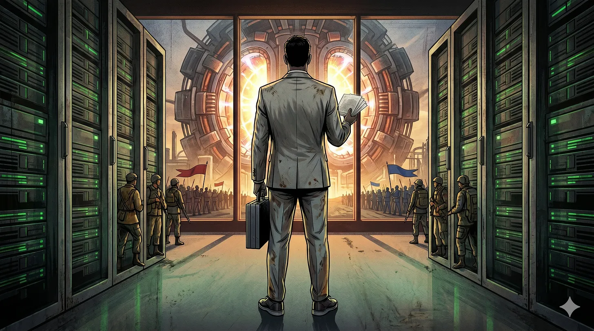

State of the Future: Friday Four
Late Dispatch from 17th April 2026: Half Term man, how do people juggle? [Replace this with a better subtitle, something that weaves in AI, fusion and wartime? Churchill sitting on a fusion reactor?

Morning ya’ll, sorry for the delayed issue. I mean, I wonder how many people actually read this as soon as it comes out? I mean, if you are, soz. Half term isn’t it.
If you didn’t see it already, I wrote a thing: https://stateofthefuture.substack.com/p/the-photonic-foundry-fallacy
“Not bad” and “I think you are wrong” are just some of the many comments I’ve had, and honestly, in this day and age, I’ll take it. I said the following:
Frontier AI is copper-limited. Training tens of thousands of GPUs talking to each other means moving petabytes between chips every second. The 1960s-era copper interconnects can’t do it, too much power, too much heat, not enough bandwidth.
Optics have carried data between continents for decades. Now the frontier is light between servers, chips on a board, chiplets inside a package, and eventually on the die itself. Every inward step is harder, which is exactly where copper gives up first, making the optical stack (transceivers, modulators, lasers) the most strategic component in AI infrastructure right now.
Incumbents are betting on silicon photonics for sunk cost reasons. Tower spending $920m to 5x its SiPho wafer capacity. GlobalFoundries bought AMF in Singapore. TSMC tooling co-packaged optics on its 300mm line. SiPho slots into existing CMOS lines, so it’s the cheapest route to “we do photonics now” and the easiest story for investors.
Startups are going exotic. HyperLight and QCi on thin-film lithium niobate (great modulator, no light generation). Ligentec on silicon nitride (ultra-low-loss waveguides, not much else on its own). Smart Photonics on indium phosphide (the only material that generates light natively, also the most expensive and lowest-yield). Three different fabs, all structured around one hero material.
Contrarian bet: the organising principle is integration. No single material can modulate, generate and guide, so the CMOS mental model (pick a material, scale the wafer, drive down cost per die) breaks. Heterogeneous integration all the way down: orchestration, chiplets, manufacturing. He who integrates wins.
Give it a read. Otherwise, onwards as hard as possible, as always.
1. Anthropic Crosses $30bn ARR. OpenAI Rage-Posts. Now Do Margins.
Right, the story of the week. Anthropic’s ARR crossed $30bn per Bloomberg. OpenAI sits at $25bn. Anthropic’s own number was $9bn at year-end 2025. That growth curve looks like a ski jump. We wiling out over here. 1,000 enterprise customers spending >$1m a year, doubled from 500 in under two months. 8 of the Fortune 10 pay Anthropic. Bloomberg reckons Anthropic spent 4x less than OpenAI to train the models doing this damage, which will do some things to the comparable DCFs if true.
OpenAI had a public little meltdown. Their revenue guy ripped Anthropic for “building a narrative on fear, restriction, and the idea that a small group of elites should control AI.” Bold move, Cotton. Same day OpenAI told Axios that Microsoft “was holding them back” and they’re cosying up to Amazon now. (Also, for the record, Opus 4.7 shipped this morning, which Anthropic openly says is below the unreleased Mythos, see Issue #9.)
But Margins. Nobody is fighting about this publicly but they should be. Top line will keep breaking records. Anthropic’s a trillion-dollar company in waiting for sure. The open question is whether any of these businesses makes money once the VC subsidy runs out. Training cost advantage is fine but most of the cost is inference, serving, and the electrons, silicon, cooling and data centres you’ve put them in. Every software engineer on $200/mo Claude Code probably burns through unit economics that would make a SaaS CFO file a missing persons report.
Every AI story from here is a silicon story, a data centre story, or an energy story. What’s hard is gross margin, and gross margin is electrons. Which brings us nicely to…
Source: Bloomberg
2. OpenAI Gives Up On Stargate UK, Signs a London Lease Anyway
In September OpenAI announced Stargate UK with NVIDIA and Nscale. 8,000 GPUs to start, 31,000 if it went well. 6 months later, it’s been paused. Reading directly from the statement, “the cost of energy and the country’s regulatory environment.” But then they signed a 88,500 sq ft lease in London for a HQ of 500+ people. So not leaving Britain. Just refusing to put compute here. The offices are lovely, it’s the electrons that are the problem.
Here is the simplest argument about the next 10 years i can make. Pensions, the NHS, welfare, defence, all of it, is downstream of economic growth. That’s a Liz Truss argument sure, but I will raise you. Economic growth is now largely downstream of AI. AI is downstream of compute. Compute is literally downstream of electrons. That means every policy argument a British politician thinks is central: tax, immigration, planning, welfare reform, is actually downstream of “is our marginal price of a kilowatt hour going down.” Remarkably simple. Very hard to get politicians to say out loud because it makes most of their existing agenda look like fiddling while Rome burns. Which I can tell you does not make for good baseload.
OpenAI is just the first big customer voting with its feet on British grid economics. Ireland capped hyperscaler connections in 2022, the Dutch have a megadatacentre moratorium, Texas lives in ERCOT meme-territory. Everyone has made power expensive. Britain is doing it on principle. France and the Nordic hydro economies look smarter every month, which is why per CNBC Nscale (Issue #5, $2bn Series C) is still in the Stargate conversation — Nordic electrons are cheap, British electrons are not. When the British champion has to build most of its compute abroad, that’s the story.
In A Specific Theory of Sovereign AI last October i argued sovereignty is infrastructure, not models. The harder version eighteen months later: sovereignty is cheap kWh. Everything downstream. I mean, I am making the case that energy is destiny. Hardly a new argument, but one that we must remember in UK and EU, and fast.
Source: CNBC (Stargate pause) | CNBC (London office)
3. Fusion Is Having A Moment
As if i’d planned it. Fusion is the technology that, if we ever build it properly, makes the energy variable from item 2 go to approximately zero.
This week Helion’s (the Sam Altman fusion favourite fwiw) Polaris reactor hit 150M°C, roughly 3/4 of commercial operating temperature. Close. Pulsar Fusion (UK) ignited first plasma in Sunbird, their fusion rocket exhaust test rig for deep space propulsion. Yes, mate. This is proper ambitious stuff we should be working on. And ARPA-E committed $135m at the Energy Innovation Summit, the largest single fusion commitment in the agency’s history. TAE is running site surveys for a first power plant in the US… I mean what’s a survey I suppose. But still, it’s a datapoint!
Timelines still don’t match the hype. First plasma is not first power. Say it with me to avoid the hype. Sensible MWh of fusion on a grid is a while away, probably early 2030s at the earliest, almost certainly delivered by a 30-year state-backed consortium rather than a venture-backed startup. But maybe some of these VC-based startups become public-private vehicles anyway. If you want the primer, i wrote one pre-AI a while back.
If cheap electrons are the master variable for everything downstream (item 2), fusion is the single most important long-range technology humans are working on, more important than AI or semis or the entire AI-infrastructure gold rush, because all of those will still pay for kilowatt hours. Fusion is the holy grail because it dissolves the master variable.
Source: Everett Today (Helion) | Euronews (Pulsar)
4. Jensen on Dwarkesh: “It’s A Chip. They Can Make It Themselves.”
And the biggest interview of the week, Jensen Huang on Dwarkesh Patel, two hours, mostly about TPU competition, Nvidia’s supply chain moat, and whether the US should be selling chips to China. The China section ran forty minutes and it did not go well.
Jensen’s argument: comparing AI chip export controls to nuclear non-proliferation is “lunacy.” Selling Nvidia parts to China is fine because “we’re not enriched uranium, it’s a chip, and it’s a chip they can make themselves.” He called export controls a “loser’s mentality.” China already has 60% of global chip manufacturing, 50% of AI researchers, plenty of energy, so blocking them is futile. Dwarkesh, credit to him, pressed on the national security implications, specifically that H20-class compute shortens the offensive-cyber timeline (see Mythos’s zero-days in Issue #9). Jensen got visibly agitated. Agitated-Jensen is not a Jensen people had previously seen.
Two problems with “they can make it themselves.” First, per Chinese chip leaders in Tom’s Hardware two weeks ago, China is five to ten years behind on frontier AI chips and short of leading-edge lithography because ASML won’t sell them EUV. Let alone NA-EUV. So they can’t, at scale, for now. Second, the person arguing the controls don’t work is the person whose biggest growth market is currently locked up by them. The incentive is doing alot of the talking.
The Chip Letter called Dwarkesh excellent and Jensen evasive. Alec Stapp called the offensive-cyber answer misleading. Zvi mostly agreed at considerable length as always.
My read. Jensen has said he believes in AGI. Many times. In many keynotes. If AGI is real, the scramble for it is wartime, and wartime means picking a side. You don’t sell to both teams on the way to the singularity. So either Jensen doesn’t really believe the AGI stuff (it’s just the keynote line), or he does believe it and is obfuscating because NVDA has a lot of growth priced in and China is the TAM that closes the valuation gap. I’m afraid this is a peacetime CEO in wartime.
Source: Dwarkesh | Chip Letter | AOL (lunacy quote)
—
Thanks everyone for reading, I appreciate you and you are loved.
Byeeeeeeeeeeeeee
If you missed it:
A Specific Theory of Sovereign AI — last October, still right, more so now